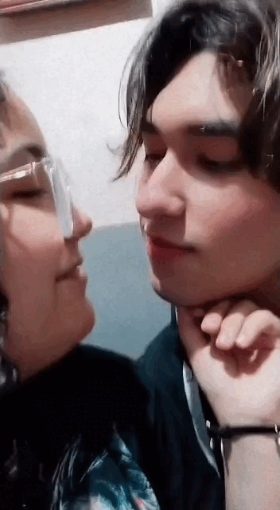

101 Motivos para te amar...
1. Eu amo o seu sorriso
2. Eu amo os seus olhos
3. Eu amo como você me entende
4. Eu amo seus carinhos
5. Eu amo sua sinceridade
6. Eu amo as suas piadas sem graça
7. Eu amo as suas brincadeiras
8. Eu amo o jeito que você fala comigo
9. Eu amo a sua voz11. Eu amo como você planeja o nosso futuro
10. Eu amo como você esta em todos os meus planos
11. Eu amo confiar em você
12. Eu amo como você confia em mim
13. Eu amo passar cada segundo do meu dia pesando em você
14. Eu amo estar com saudade segundos depois de me despedir você
15. Eu amo o seu cheiro
16. Eu amo como você segura minha cintura
17. Eu amo o seu abraço
18. Eu amo o seu beijo demorado
19. Eu amo a sua criatividade
20. Eu amo quando você pensa que sou um sorvete Hmmmm Kkkkk
21. Eu amo como você me conforta
22. Eu amo como voce sempre me ajuda
23. Eu amo a sua sobrancelha
24. Eu amo quando você me provoca
25. Eu amo ter você
26. Eu amo ser sua
27. Eu amo sua beleza
28. Eu amo te fazer rir
29. Eu amo como você nunca me deixa triste
30. Eu amo como sempre abro um sorriso quando se vejo
31. Eu amo ficar boba por você
32. Eu amo como você segura minha mão
33. Eu amo como você olha pra mim
34. Eu amo cada segundo que eu passo contigo
35. Eu amo a sua capacidade de me fazer rir em qualquer situação
36. Eu amo quando você me aperta
37. Eu amo a sua gargalhada
38. Eu amo como vcê me respeita
39. Eu amo o seu romantismo
40. Eu amo como você me tornou romântica
41. Eu amo a segurança que você me transmite
42. Eu amo encostar no teu peito
43. Eu amo mexer no seu cabelo
44. Eu amo você se preocupa mais com o cabelo do que com qualquer coisa
45. Eu amo a sua preocupação de ser lindo pra mim
46. Eu amo quando você faz a coisa que eu falo que eu amo (você entendeu)
47. Eu amo como você é o meu futuro
48. Eu amo como você me acha bonita mesmo desarrumada
49. Eu amo os seus dedos 😳
50. Eu amo como você as vezes fala nada com nada
51. Eu amo como nunca quero deixá-lo ir
52. Eu amo como odeio ficar longe de você
53. Eu amo meu medo de te perder
54. Eu amo sentir um pouquinho de ciúme de você
55. Eu amo como você me cuida
56. Eu amo te cuidar
57. Eu amo te dar calinho
58. Eu amo como você e tudo pra mim
59. Eu amo ser seu tudo, seu mundo
60. Eu amo a capacidade que você tem de me fazer te amar intensamente
61. Eu amo o nosso namoro
62. Eu amo ser diferente com você
63. Eu amo a nossa fofura
64. Eu amo como já temos "tudo" planejado pro nosso futuro
65. Eu amo como você queer estar comigo sempre
66. Eu amo como a gente nunca briga
67. Eu amo como nos conhecemos o suficiente pra não magoar o outro
68. Eu amo como você me cuida quandoestou sensível
69. Eu amo como a gente é tudo intenso
70. Eu amo como a gente é tudo apaixonante
71. Eu amo como você me dá um motivo para eu te amar mais todos os dias
72. Eu amo a sua mãe, sério! sogrinhaaaa🥰
73. Eu amo dizer que te amo
74. Eu amo como gosto de dizer que te amo toda hora
75. Eu amo como você nunca é grosseiro comigo
76. Eu amo como você não precisa de esforço pra me impressionar
77. Eu amo como você não precisa de esforço pra me fazer sorrir
78. Eu amo como você não precisa de esforço pra me fazer feliz
79. Eu amo como você consegue ser tudo o que preciso
80. Eu amo como você fez eu perder o medo de me entregar
81. Eu amo a sua boca
82. Eu amo o seu estilo
83. Eu amo amar tudo em você
84. Eu amo como você faz eu me sentir mulher
85. Eu amo quando você me dá a certeza de que me ama
86. Eu amo quando você me dá a ceeteza de que eu sou única
87. Eu amo quando você me dá a certeza de que viveremos sempre felizes
88. Eu amo sua respiração no meu ouvido
89. Eu amo seu modo de falar
90. Eu amo os seus defeitos
91. Eu amo todas as partes dos seu corpo, eu amo vc por completo
92. Eu amo a sua carência
93. Eu amo quando você diz que ama ver eu arrumando o belo
94. Eu amo te fazer feliz
95. Eu amo ser sua namorada
96. Eu amo me sentir sortuda por ter você
97. Eu amo quando você não deixa eu coçar meu olho
98. Eu amo seu beijo
99. Eu amo andar de mãos dadas contigo
100. Eu amo como aprendi a ser melhor contigo
101. Eu amo o seu abraço apertado
102. Eu amo sonha com você
103. Eu amo quando você torna um sonho meu realidade
104. Eu amo te admirar
105. Eu amo como você me elogia
106. Eu amo ser eu mesma contigo
107. Eu amo ouvir você dizendo "neném"
108. Eu amo os apelidos carinhosos que você coloca em mim
109. Eu amo como existem N motivos pra eu te amar
110. Eu amo você, apenas por ser você, sem precisar de motivos ou porquê. Isso não tem explicação, não tem definição, é amor ou talvez mais que isso.É intenso, é puro, é real... Eu amo cada detalhe seu.

Meu amor eu te amo é sempre irei te amar... Eu prometo pra você que NUNCA irei te deixar, você e eu e pra SEMPRE